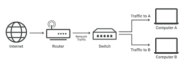

A switch's function is to create and manage a network by connecting multiple devices, such as computers and printers, and directing data between them efficiently. It operates by examining the Media Access Control (MAC) address of incoming data packets, learning which port each device is connected to, and storing this information in a MAC address table. The switch then forwards the data only to the correct port, enabling fast, dedicated communication and preventing unnecessary traffic.
When devices are first connected, the switch "floods" the network, sending a message to all other devices to learn their MAC addresses and identify which port they are connected to.
The switch builds and maintains a MAC address table, also known as a CAM table, which maps the MAC address of each connected device to its specific port.
When a data packet arrives, the switch reads the destination MAC address. It then looks up this address in its MAC table and forwards the packet only to the corresponding port, sending it directly to the intended device.
By only sending data to the necessary port, the switch ensures that traffic between devices is isolated and dedicated, improving network performance and efficiency.
